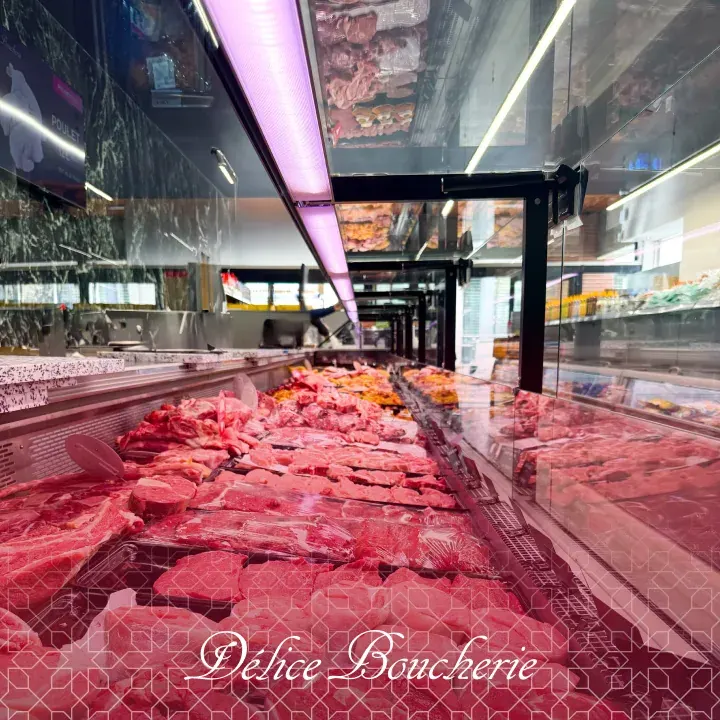

Nouveauté
Nouveauté
Nouveautés
Tartinables frais
Houmous, caviar d'aubergine, tzatziki… sans conservateur.

Supermarchés, boucheries et primeur halal : 5 boutiques Délice à Manosque, Digne-les-Bains et Gap, ouvertes 7 jours sur 7 avec des produits frais et des prix justes.
Chaque boutique a son univers et ses produits. Statut d'ouverture en temps réel.
 Supermarché
Supermarché
 SupermarchéNouveau
SupermarchéNouveau
 Boucherie
Boucherie
 Boucherie
Boucherie

 Primeur
Primeur


Viande française, préparations maison, conseils du boucher.


Arrivages quotidiens, dès 6h à Manosque.


Épices, huiles, olives, saveurs de Méditerranée.


Poulets rôtis du vendredi au dimanche.


Frais, surgelés, hygiène, beauté : toutes vos courses en un passage.
Depuis 2021, Délice Market est le supermarché halal de proximité de Manosque : un commerce propre, moderne et familial, pensé pour les courses de tous les jours.
Autour du supermarché, la famille Délice compte aujourd'hui Boucherie Délice et Délice Primeur à Manosque, Délice Boucherie à Digne-les-Bains et, nouveauté 2026, Délice Market à Gap. Partout, la même promesse : la qualité du commerce de proximité, à des prix accessibles.
NouveautéHoumous, caviar d'aubergine, tzatziki… sans conservateur.
 Nouveauté
Nouveauté350 ml, 5 parfums à découvrir, sans colorant.
 Beauté
BeautéPlusieurs fragrances disponibles en magasin.
 Surgelés
SurgelésLe format géant 12 × 40 ml pour l'été.
★★★★★« Dimanche, j'ai réservé un poulet rôti par téléphone, pris à 11h30. Nous nous sommes régalés ! L'étal de viande était tellement beau que j'ai pris un assortiment de brochettes de poulet. Je recommande les yeux fermés. »
★★★★★« De passage pour 2 semaines en camping à Digne : brochettes, bavettes, côte de bœuf à des prix très abordables, avec une qualité de service irréprochable. »
★★★★★« Wahoo la propreté, les rayons bien rangés. Une vitrine à ne plus savoir quoi choisir. Une viande excellente à prix abordable et des bouchers souriants. Ça manquait à Digne-les-Bains. »
★★★★★« Des bouchers très gentils et accueillants, même à l'heure de fermeture. Ils sont très professionnels et vous servent toujours avec le sourire. La viande est de qualité, le magasin est très propre. »
★★★★★« Magasin très bien, rangé et organisé. Un large choix, une large gamme halal. Personnel très accueillant et sympathique. »
★★★★★« Très bon accueil. Magasin ouvert le dimanche et bien achalandé. »
Recevez chaque semaine les promos de votre boutique Délice directement par e-mail ou SMS.